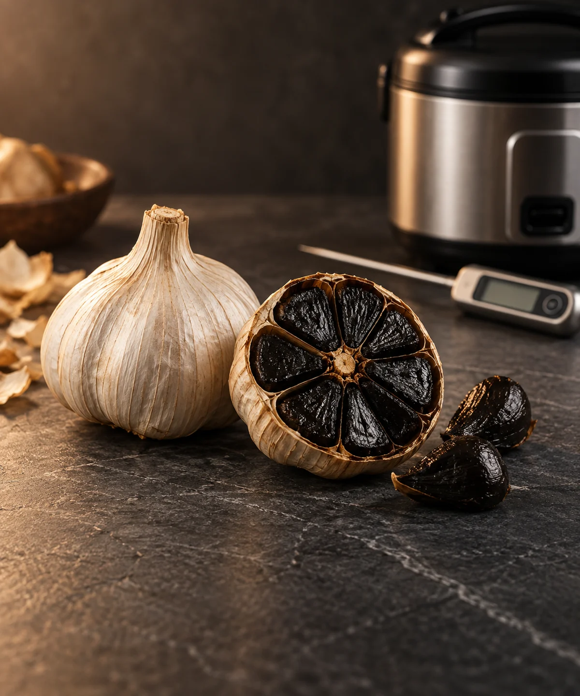
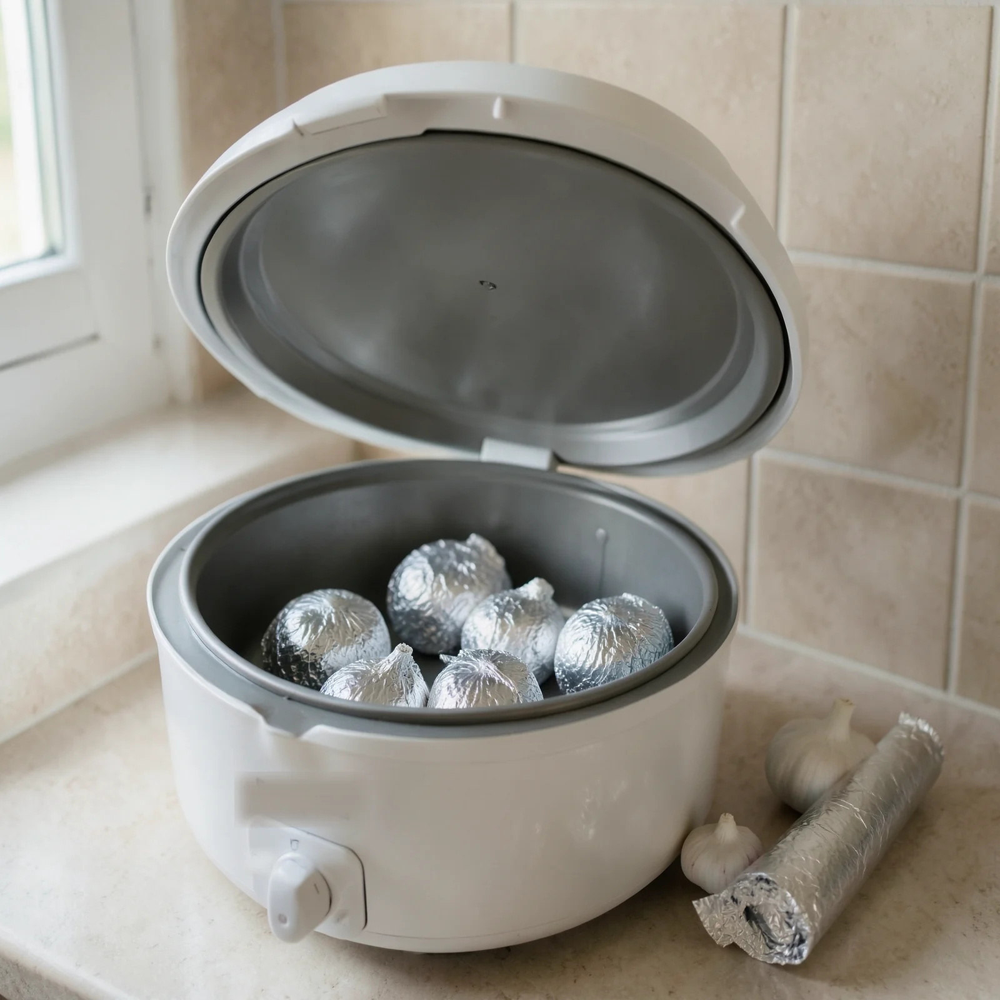

Temperatura errada
A panela parece aquecer normalmente, mas pode trabalhar fora da faixa necessária durante dias.
Teste o aparelho sem arriscar o primeiro lote. Depois, siga o mapa dia a dia e corrija os cinco erros que fazem o alho apodrecer, ressecar ou amargar.

Observe temperatura, estabilidade e vedação antes de colocar o primeiro alho.
A panela parece aquecer normalmente, mas pode trabalhar fora da faixa necessária durante dias.
O alho pode ressecar, azedar ou criar mofo quando o vapor e a vedação não estão equilibrados.
Sem sinais objetivos, cada abertura da panela vira um palpite — e cada palpite altera o processo.

Protocolo das 72 horaspara testar a panela antes do primeiro lote
Mapa do dia 0 ao 40com sinais e ações para cada fase
Diagnóstico dos 5 errosapodrecer, ressecar, amargar e mais
Fichas para imprimirmedição, diário de lote e lista de compras
Receitas e uso do alho negroseis aplicações depois que o lote ficar pronto
Guia digital completo + protocolo de teste + mapa de execução + fichas para imprimir.
Não. Esta oferta é um guia 100% digital, com material em PDF e fichas que você pode imprimir em casa.
Não dá para prometer isso sem medir. É exatamente por isso que o método começa pelo protocolo de 72 horas: ele ajuda você a entender se o seu aparelho mantém o comportamento necessário antes de arriscar o alho.
Não. O método foi organizado como uma sequência prática de medições, sinais e decisões, inclusive com uma lista dos erros mais comuns.
O acesso é enviado por e-mail depois da confirmação do pagamento.
Você pode solicitar o reembolso dentro do prazo de 7 dias previsto na oferta.